Acorazada con una aleación de cristales de bismuto y tungsteno, la tortuga baotilena se desplaza tranquilamente por el ardiente desierto Guefideano.

Contrario a su homónimo en la tierra, la tortuga baotilena posee más rasgos fisiológicos propios de organismos vegetales que de animales. En la base de los pilares que conforman sus patas se encuentran miles de filamentos delgados que usa para buscar restos minerales de los que se alimenta y añade a la constitución de sus caparazones. Su falta de boca y enormes ojos compuestos perfeccionan su carácter precavido.
Los adultos viven de forma solitaria y se reúnen en comunidades solamente durante las épocas de reproducción. Las tortugas baotilenas son hermafroditas y pueden tener diversas parejas a lo largo de su vida, pero las eligen por medio de un ritual de cortejo que consiste en postrarse una frente a la otra y redirigir luz reflejada a los ojos usando su caparazón, una tarea sencilla para aquellas que tienen caparazones más grandes. Tienen de 1 a 2 crías por cada ciclo y estas se quedan a cargo de su progenitor hasta que alcanzan la madurez sexual.

Ya que el entorno Guefideano no es favorable para un bebé, los adultos han desarrollado una “escotilla” por la que sus crías entran a sus caparazones para descansar o protegerse de climas adversos y posibles depredadores. El caparazón de las crías se pule conforme crecen, dibujando detalles intrínsecos en base a su alimentación y desarrollo.